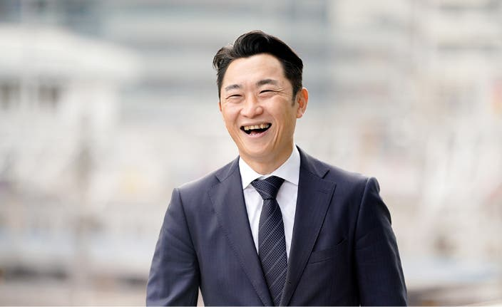

代表メッセージ
私たちは創業以来、持続的な地域社会モデルを構築することで地域活性化を継続的かつ発展的な事業というかたちで実現することを目的に、愚直に事業に取り組んでまいりました。多くの失敗もしましたが、少しずつ実績を積み、確実に成長してまいりました。貴重なご縁に恵まれたこと、多くの方にご支援いただけていることに、改めて感謝いたします。
私たちの価値観の一つに、「利益がなければ生きられない、理念がなければ生きる価値がない」というものがございます。文字通りの意味ですが、理念と利益、どちらも不可欠なものとして大事にしてまいりました。今後も理念を大事に、しっかりと一歩一歩、着実に成長し、社会に貢献し続けられる事業体であり続けます。
創業から26年。インターネット、スマートフォン、そしてAI。使える道具は大きく変わりました。それでも、私たちの仕事は、お店を訪ね、人の話を聞くところから始まります。
その人がなぜこの街でお店を続けているのか。何にこだわり、何に困っているのか。画面の向こうだけでは分からないことが、地域にはたくさんあります。そこに向き合うことを、私たちは大切にしてきました。
AIには大きな可能性を感じています。文章を考えたり、発信の準備をしたりする時間を減らせれば、お店の人は、お客さまや商品にもっと時間を使える。地域の担当者も、目の前の相談にもう一歩踏み込める。私は、そんな使い方を広げたいと思っています。
便利な道具を届けるだけで、地域が元気になるとは思っていません。その道具が日々の仕事で役立つまで、そばで一緒に考える。まいぷれがそういう存在であり続けられるか。私たちが問われるのは、そこだと思います。
地域活性化を、継続的かつ発展的事業の形で実現する。一時の取り組みで終わらせず、地域とともに事業を続ける。創業時からのこの想いを、全国の仲間と、そして海外の仲間とも形にしていきます。

1973年12月23日生まれ、千葉県出身。
慶應義塾大学卒業後、リクルート入社。人事部で活躍。
2000年にリクルートを卒業し、地域活性化を事業目的に株式会社フューチャーリンクネットワーク設立。
全国各地域のパートナー企業とともに地域情報プラットフォーム「まいぷれ」を運営。
このプラットフォームを基盤に、地域事業者支援、AI・SaaS、官民協働、関係人口創出、海外展開などを推進。
愚直に事業を続け、創業22年目の2021年、東証マザーズ（現、東証グロース市場）に上場。現在に至る。
経営哲学は「利益がなければ生きられない、理念がなければ生きる価値がない」
| 1997年3月 | 慶応義塾大学商学部卒業 |
|---|---|
| 1997年4月 | 株式会社リクルート入社 |
| 2000年3月 | 株式会社フューチャーリンクネットワーク設立 代表取締役就任 |
| 2000年6月 | 株式会社リクルート退職 |
| 2006年10月 | 株式会社宣美 代表取締役就任（2018年9月に吸収合併） |
| 2016年11月 | 株式会社まいぷれ加古川設立 代表取締役就任（2019年9月に吸収合併） |